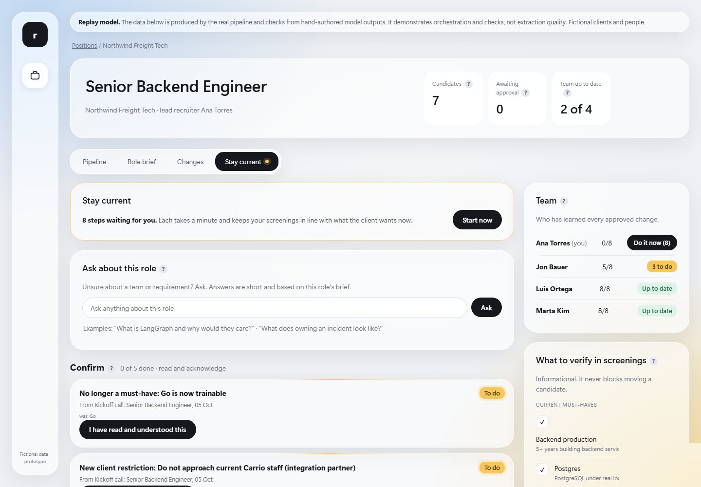
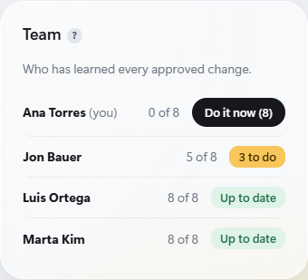
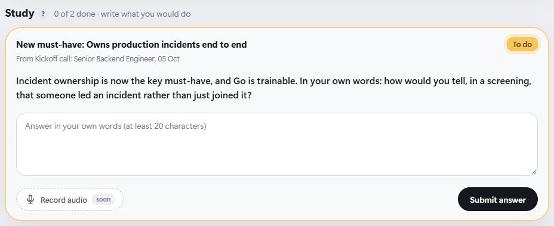
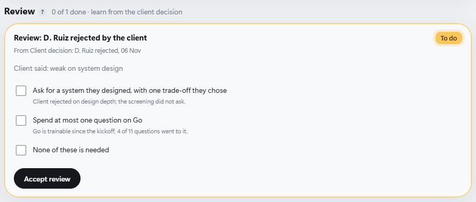

Prototype v3 · draft in Richard's voice. First-person lines are proposals for Richard to edit. Yellow dashed = pending. Screenshots are from the running app (replay data).
The problem I picked, the calls I made along the way, and what I built.
Six short chapters
Video walkthrough: link pending
Every search starts with a JD and a kickoff call. The information is there. Nobody checks whether the recruiter understood it.
Day one of a search
Same candidate · two first screenings
Asks about keywords
Asks what the client actually needs
The left call mirrors a real screening in the demo data (4 of 11 questions on Go). The right one is an illustration.
What you get when the recruiter understands
And the role doesn't stay still: a month later the founder cuts the budget, and that email reaches one inbox.
The question this harness answers
Does every recruiter on this search understand what the client needs, today?
I prototyped, looked at the result, and threw parts away. These turns shaped what I built.
The harness lives inside the ATS recruiters already open every morning.

Three kinds of change, three kinds of effort
Budget is now up to €72k. One tick. The lead sees who's done.

Incident ownership is a new must-have. Answer in your own words.

The client rejected D. Ruiz. Pick what the team checks next time.

The AI reads and proposes. Checks and a person decide. Step through it at your own pace.
up to €72kas the maximum. We'd also prefer the person
starts in Q1rather than right away.
I ran a live model through the same checks on all 13 demo sources.
Sources that passed every check
Honest status
The checked pipeline, lead approval, bias flags, learning steps, team progress, live OpenAI path, tracing, N tests.
Synthetic data. The demo replays recorded answers by default. The live model finds fewer changes than my reference. One demo user.
Whether my rules for "how big is this change" match a real lead's judgment.
pending
Richard's own words I've built RAG pipelines and app integrations many times. They depend on each agency's tools. Here they'd hide the part worth showing: how what the client said becomes what the recruiter knows.
What I chose, and why
| No RAG | One brief plus one new email fits the model's context. Retrieval would add a way to fail with nothing gained. |
| No connectors | Emails, transcripts and news are files. A connector only changes how a file arrives. |
| Next.js + Zod | I proved the workflow with zero dependencies first. Then I moved to one Next.js service so the UI and API share validation and every AI call is traced and tested. |
| SQLite | Built into Node 24, nothing to install. Original emails and transcripts stay readable, so every change traces back to the exact text. |
Run it · offline, no key needed
cd app-next pnpm install pnpm harness rebuild pnpm dev # http://localhost:3000
Node 24.12+ and pnpm. For the live model, set OPENAI_API_KEY and OPENAI_MODEL=gpt-4o in .env. confirm after cutover
Next, with more time
Make the model reuse the brief's existing labels. Fixes the one failing source.
One screen across all roles: who's behind, and on what.
A short primer when a recruiter meets an unfamiliar kind of role.
Thanks for reading. Happy to walk through any of it on a call.